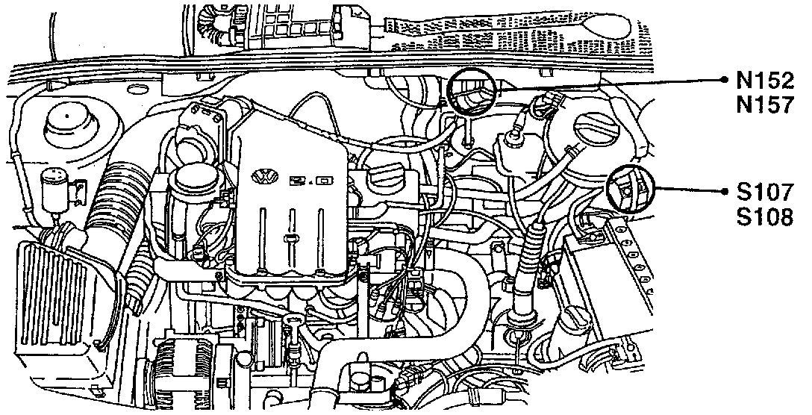
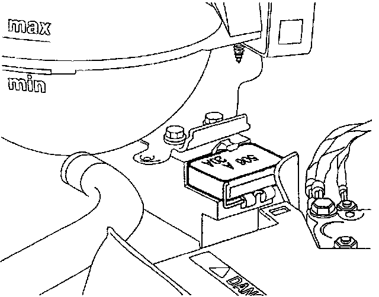

Operation CHARM
: Car repair manuals for everyone.
Home
>>
Volkswagen
>>
1997
>>
GTI (1H1) V6-2.8L (AAA)
>>
Repair and Diagnosis
>>
Starting and Charging
>>
Power and Ground Distribution
>>
Fuse
>>
Locations
>>
Coolant Fan 1ST-Speed and A/C Clutch Fuse
Coolant Fan 1ST-Speed and A/C Clutch Fuse
N152, S107, S108, N157:

Component Location View
S107:

Component View
S108 Coolant Fan 1st-Speed and A/C Clutch Fuse
^
Behind battery, on coolant fan control module J293, under plastic cover